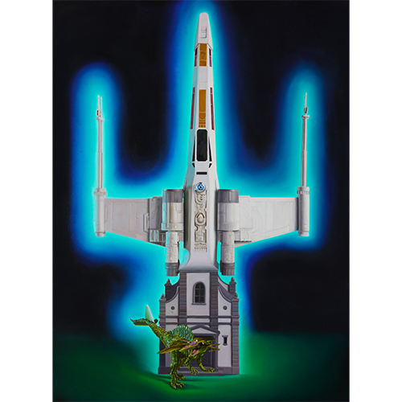
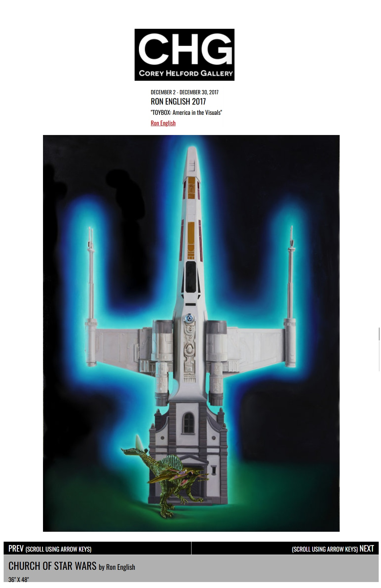

Exhibitions
TOYBOX: America in the Visuals, Corey Helford Gallery, Los Angeles, California, US, December 2–December 30, 2017.
Literature
Ron English, Original Grin: The Art of Ron English (Paris: Cernunnos, 2019), p. 243. ISBN 978-2374950938.
Notes
This work appears on Corey Helford Gallery’s artwork page for the exhibition TOYBOX: America in the Visuals.
This work references the visual language of Star Wars.
Ancillary Documentation



Selected Online Circulation
Selected source documenting the work’s wider online circulation.